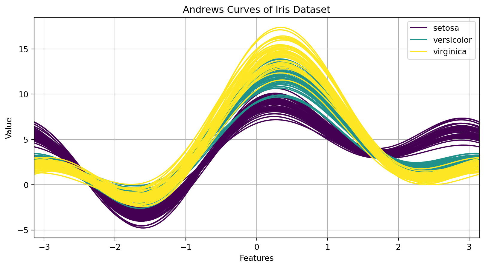
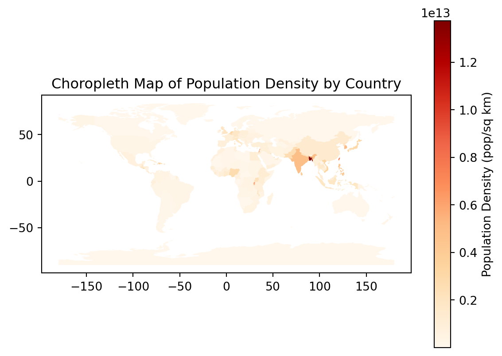

3.1 Data Visualization Techniques
Data visualization techniques are essential for understanding and interpreting data. They help to identify patterns, trends, and outliers in the data. Below is a detailed guide from basic to advanced techniques.
3.1.1 Univariate Visualizations
3.1.1.1 Histograms and Density Plots
Histograms and density plots are used to visualize the distribution of a single variable.
Histograms: Display the frequency distribution of a variable by dividing the data into bins. Example: A histogram of ages in a population dataset.
Density Plots: Smooth the distribution into a continuous curve, showing the probability density function. Example: A density plot of the heights of individuals.
3.1.1.2 Box Plots and Violin Plots
Box plots and violin plots are used to visualize the distribution of a variable and identify outliers.
Box Plots: Show the median, quartiles, and outliers of a variable. Example: A box plot of salaries in a company.
Violin Plots: Combine box plots with density plots, showing the distribution shape. Example: A violin plot of exam scores in different classes.
Show the code
import pandas as pd
import numpy as np
import matplotlib.pyplot as plt
import seaborn as sns
# Generate a sample dataset
np.random.seed(42)
data = pd.DataFrame({
'age': np.random.randint(18, 80, 100),
'height': np.random.normal(170, 10, 100),
'salary': np.random.normal(50000, 15000, 100),
'exam_score': np.random.normal(75, 10, 100)
})
# 3.1.1.1 Histograms and Density Plots
# Histograms
plt.figure(figsize=(10, 5))
plt.hist(data['age'], bins=10, alpha=0.7, color='blue', edgecolor='black')
plt.title('Histogram of Ages')
plt.xlabel('Age')
plt.ylabel('Frequency')
plt.show()
# Density Plots
plt.figure(figsize=(10, 5))
sns.kdeplot(data['height'], shade=True, color='red')
plt.title('Density Plot of Heights')
plt.xlabel('Height (cm)')
plt.ylabel('Density')
plt.show()
# 3.1.1.2 Box Plots and Violin Plots
# Box Plots
plt.figure(figsize=(10, 5))
sns.boxplot(data['salary'], color='green')
plt.title('Box Plot of Salaries')
plt.xlabel('Salary')
plt.show()
# Violin Plots
plt.figure(figsize=(10, 5))
sns.violinplot(data['exam_score'], color='purple')
plt.title('Violin Plot of Exam Scores')
plt.xlabel('Exam Score')
plt.show()/var/folders/v8/l5r44ftx4g5bx2y5fhdpcmmh0000gn/T/ipykernel_32356/544273289.py:27: FutureWarning:
`shade` is now deprecated in favor of `fill`; setting `fill=True`.
This will become an error in seaborn v0.14.0; please update your code.
/Users/ravishankar/miniforge3/lib/python3.10/site-packages/seaborn/_oldcore.py:1119: FutureWarning:
use_inf_as_na option is deprecated and will be removed in a future version. Convert inf values to NaN before operating instead.
3.1.1.3 Bar Charts and Pie Charts
Bar charts and pie charts are used to display categorical data.
Bar Charts: Represent the frequency of categories using bars. Example: A bar chart of the number of employees in different departments.
Pie Charts: Show the proportion of categories as slices of a pie. Example: A pie chart of market share of different companies.
Show the code
import pandas as pd
import numpy as np
import matplotlib.pyplot as plt
import seaborn as sns
# Generate a sample categorical dataset
np.random.seed(42)
data = pd.DataFrame({
'department': np.random.choice(['HR', 'IT', 'Finance', 'Marketing', 'Sales'], 100),
'company': np.random.choice(['Company A', 'Company B', 'Company C', 'Company D'], 100)
})
# 3.1.1.3 Bar Charts and Pie Charts
# Bar Charts
plt.figure(figsize=(10, 5))
sns.countplot(x='department', data=data, palette='viridis')
plt.title('Bar Chart of Number of Employees in Different Departments')
plt.xlabel('Department')
plt.ylabel('Number of Employees')
plt.show()
# Pie Charts
company_counts = data['company'].value_counts()
plt.figure(figsize=(8, 8))
plt.pie(company_counts, labels=company_counts.index, autopct='%1.1f%%', startangle=140, colors=sns.color_palette('viridis', len(company_counts)))
plt.title('Pie Chart of Market Share of Different Companies')
plt.show()3.1.2 Bivariate Visualizations
3.1.2.1 Scatter Plots
Scatter plots are used to visualize the relationship between two continuous variables.
- Example: A scatter plot of height vs. weight.
3.1.2.2 Hexbin Plots
Hexbin plots are used for visualizing the relationship between two variables when the data is dense.
- Example: A hexbin plot of latitude and longitude of sightings of a rare bird species.
3.1.2.3 2D Histograms
2D histograms display the joint distribution of two variables.
- Example: A 2D histogram of age and income.
Show the code
import pandas as pd
import numpy as np
import matplotlib.pyplot as plt
import seaborn as sns
# Ensure the same number of rows for each column
np.random.seed(42)
n_rows = 1000
data = pd.DataFrame({
'height': np.random.normal(170, 10, n_rows),
'weight': np.random.normal(70, 15, n_rows),
'latitude': np.random.uniform(-90, 90, n_rows),
'longitude': np.random.uniform(-180, 180, n_rows),
'age': np.random.randint(18, 80, n_rows),
'income': np.random.normal(50000, 15000, n_rows)
})
# 3.1.2.1 Scatter Plots
plt.figure(figsize=(12, 8))
plt.scatter(data['height'], data['weight'], alpha=0.7, edgecolors='w', s=100)
plt.title('Scatter Plot of Height vs. Weight')
plt.xlabel('Height (cm)')
plt.ylabel('Weight (kg)')
plt.show()
# 3.1.2.2 Hexbin Plots
plt.figure(figsize=(12, 8))
plt.hexbin(data['latitude'], data['longitude'], gridsize=30, cmap='viridis')
plt.colorbar(label='Count')
plt.title('Hexbin Plot of Latitude vs. Longitude')
plt.xlabel('Latitude')
plt.ylabel('Longitude')
plt.show()
# 3.1.2.3 2D Histograms
plt.figure(figsize=(12, 8))
plt.hist2d(data['age'], data['income'], bins=[20, 20], cmap='viridis')
plt.colorbar(label='Count')
plt.title('2D Histogram of Age vs. Income')
plt.xlabel('Age')
plt.ylabel('Income')
plt.show()3.1.3 Multivariate Visualizations
3.1.3.1 Pair Plots
Pair plots show pairwise relationships between variables in a dataset.
- Example: A pair plot of the features in the Iris dataset.
3.1.3.2 Parallel Coordinates
Parallel coordinates plots are used to visualize multivariate data by plotting each feature as a vertical axis.
- Example: A parallel coordinates plot of car attributes like mileage, horsepower, and weight.
3.1.3.3 Andrews Curves
Andrews curves represent multivariate data as curves in a two-dimensional plot.
- Example: Andrews curves of different species in the Iris dataset.
Show the code
import warnings
import pandas as pd
import numpy as np
import matplotlib.pyplot as plt
import seaborn as sns
from pandas.plotting import parallel_coordinates, andrews_curves
# Suppress specific FutureWarnings
warnings.filterwarnings('ignore', category=FutureWarning, module='pandas')
warnings.filterwarnings('ignore', category=FutureWarning, module='seaborn')
# Load the Iris dataset as an example
data = sns.load_dataset('iris')
# 3.1.3.1 Pair Plots
plt.figure(figsize=(10, 10))
sns.pairplot(data, hue='species', palette='viridis')
plt.suptitle('Pair Plot of Iris Dataset', y=1.02)
plt.show()
# 3.1.3.2 Parallel Coordinates
plt.figure(figsize=(10, 5))
parallel_coordinates(data, 'species', color=['blue', 'green', 'red'])
plt.title('Parallel Coordinates Plot of Iris Dataset')
plt.xlabel('Features')
plt.ylabel('Value')
plt.show()
# 3.1.3.3 Andrews Curves
plt.figure(figsize=(10, 5))
andrews_curves(data, 'species', colormap='viridis')
plt.title('Andrews Curves of Iris Dataset')
plt.xlabel('Features')
plt.ylabel('Value')
plt.show()<Figure size 960x960 with 0 Axes>
3.1.4 Time Series Visualizations
3.1.4.1 Line Plots
Line plots are used to visualize data points in time order.
- Example: A line plot of monthly sales data.
3.1.4.2 Area Charts
Area charts are used to visualize cumulative totals over time.
- Example: An area chart of the cumulative number of users over time.
3.1.4.3 Seasonal Decomposition Plots
Seasonal decomposition plots separate a time series into trend, seasonal, and residual components.
- Example: Seasonal decomposition of daily temperature data.
Show the code
import pandas as pd
import numpy as np
import matplotlib.pyplot as plt
import seaborn as sns
from statsmodels.tsa.seasonal import seasonal_decompose
# Generate a sample time series dataset
np.random.seed(42)
date_range = pd.date_range(start='2020-01-01', periods=730, freq='D')
data = pd.DataFrame({
'date': date_range,
'sales': np.random.poisson(200, 730).cumsum(), # cumulative sales
'users': np.random.poisson(20, 730).cumsum() # cumulative users
})
data['temperature'] = 20 + 10 * np.sin(2 * np.pi * data.index / 365) + np.random.normal(0, 1, 730)
# Set the date as the index
data.set_index('date', inplace=True)
# 3.1.4.1 Line Plots
plt.figure(figsize=(10, 5))
plt.plot(data.index, data['sales'], label='Sales')
plt.title('Line Plot of Monthly Sales Data')
plt.xlabel('Date')
plt.ylabel('Sales')
plt.legend()
plt.show()
# 3.1.4.2 Area Charts
plt.figure(figsize=(10, 5))
plt.fill_between(data.index, data['users'], color='skyblue', alpha=0.4)
plt.plot(data.index, data['users'], color='Slateblue', alpha=0.6, linewidth=2)
plt.title('Area Chart of Cumulative Number of Users Over Time')
plt.xlabel('Date')
plt.ylabel('Number of Users')
plt.show()
# 3.1.4.3 Seasonal Decomposition Plots
# Decompose the temperature data
result = seasonal_decompose(data['temperature'], model='additive', period=365)
plt.figure(figsize=(10, 8))
result.plot()
plt.suptitle('Seasonal Decomposition of Daily Temperature Data', y=1.02)
plt.show()<Figure size 960x768 with 0 Axes>3.1.5 Geospatial Visualizations
3.1.5.1 Choropleth Maps
Choropleth maps use different shades or colours to represent data values in different geographical areas.
- Example: A choropleth map of population density by country.
3.1.5.2 Point Maps
Point maps represent data points on a map.
- Example: A point map of earthquake locations.
3.1.5.3 Heat Maps
Heat maps display the intensity of data at geographical locations using colour gradients.
- Example: A heat map of crime rates in a city.
Advanced considerations in data visualization include: - Ensuring visual clarity and avoiding misleading representations.
Combining multiple visualization techniques for comprehensive analysis.
Using interactive visualizations for better user engagement and insight discovery.
Show the code
import geopandas as gpd
import folium
import matplotlib.pyplot as plt
import pandas as pd
import numpy as np
from folium.plugins import HeatMap
# Load the Natural Earth low resolution dataset directly from the online source
url = 'https://github.com/nvkelso/natural-earth-vector/raw/master/geojson/ne_110m_admin_0_countries.geojson'
world = gpd.read_file(url)
# Inspect the columns to find the correct ones
print(world.columns)
# Create a choropleth map of population density
# Note: Adjust column names based on inspection results
world['density'] = world['POP_EST'] / world['geometry'].area * 10**6 # Calculate density (pop/sq km)
world = world[(world.POP_EST > 0)] # Remove entries with invalid values
plt.figure(figsize=(30, 15)) # Set the figure size to be larger
world.plot(column='density', cmap='OrRd', legend=True, legend_kwds={'label': "Population Density (pop/sq km)"})
plt.title('Choropleth Map of Population Density by Country')
plt.show()
# Set the location to Chapra, Bihar, India
chapra_location = [25.7794, 84.7472]
# Generate a sample dataset of earthquake locations near Chapra
earthquakes = pd.DataFrame({
'latitude': np.random.uniform(25.5, 26.0, 100),
'longitude': np.random.uniform(84.5, 85.0, 100)
})
# Create a point map using Folium centered on Chapra, Bihar, India
m = folium.Map(location=chapra_location, zoom_start=10)
for idx, row in earthquakes.iterrows():
folium.CircleMarker([row['latitude'], row['longitude']], radius=2, color='red').add_to(m)
m.save('point_map_chapra.html')
m
# Generate a sample dataset of crime locations in Chapra
crimes = pd.DataFrame({
'latitude': np.random.uniform(25.7, 25.9, 1000),
'longitude': np.random.uniform(84.6, 84.8, 1000)
})
# Create a heat map using Folium centered on Chapra, Bihar, India
m = folium.Map(location=chapra_location, zoom_start=13)
HeatMap(data=crimes[['latitude', 'longitude']].values, radius=10).add_to(m)
m.save('heat_map_chapra.html')
mIndex(['featurecla', 'scalerank', 'LABELRANK', 'SOVEREIGNT', 'SOV_A3',
'ADM0_DIF', 'LEVEL', 'TYPE', 'TLC', 'ADMIN',
...
'FCLASS_TR', 'FCLASS_ID', 'FCLASS_PL', 'FCLASS_GR', 'FCLASS_IT',
'FCLASS_NL', 'FCLASS_SE', 'FCLASS_BD', 'FCLASS_UA', 'geometry'],
dtype='object', length=169)/var/folders/v8/l5r44ftx4g5bx2y5fhdpcmmh0000gn/T/ipykernel_32356/3468648773.py:17: UserWarning:
Geometry is in a geographic CRS. Results from 'area' are likely incorrect. Use 'GeoSeries.to_crs()' to re-project geometries to a projected CRS before this operation.
<Figure size 2880x1440 with 0 Axes>
3.2 Statistical Analysis of Datasets
Statistical analysis of datasets involves summarizing data, making inferences, and fitting data to known distributions. This section covers a range of techniques from basic descriptive statistics to advanced distribution fitting.
3.2.1 Descriptive Statistics
Descriptive statistics summarize and describe the main features of a dataset. These measures are divided into three main categories: measures of central tendency, measures of dispersion, and measures of shape.
3.2.1.1 Measures of Central Tendency
Measures of central tendency describe the center of a data distribution, providing a single value that represents the entire dataset.
Mean: The average value of the dataset, calculated as the sum of all values divided by the number of values. Example: The mean income of a group of people. Formula: \[ \text{Mean} (\mu) = \frac{\sum_{i=1}^{n} x_i}{n} \]
Median: The middle value when the data is sorted in ascending or descending order. If the dataset has an even number of observations, the median is the average of the two middle numbers. Example: The median age in a population. Calculation: For an odd number of observations: \[ \text{Median} = x_{\left(\frac{n+1}{2}\right)} \] For an even number of observations: \[ \text{Median} = \frac{x_{\left(\frac{n}{2}\right)} + x_{\left(\frac{n}{2}+1\right)}}{2} \]
Mode: The most frequently occurring value in the dataset. A dataset can have more than one mode if multiple values have the highest frequency. Example: The mode of shoe sizes sold in a store.
3.2.1.2 Measures of Dispersion
Measures of dispersion describe the spread of data points around the center, providing insights into the variability or consistency within the dataset.
Range: The difference between the maximum and minimum values in the dataset. Example: The range of temperatures recorded in a month. Formula: \[ \text{Range} = \text{Max}(x) - \text{Min}(x) \]
Variance: The average of the squared differences from the mean, providing a measure of how spread out the values are. Example: The variance in students’ test scores. Formula: \[ \text{Variance} (\sigma^2) = \frac{\sum_{i=1}^{n} (x_i - \mu)^2}{n} \]
Standard Deviation: The square root of the variance, representing the average distance of each data point from the mean. Example: The standard deviation of heights in a population. Formula: \[ \text{Standard Deviation} (\sigma) = \sqrt{\frac{\sum_{i=1}^{n} (x_i - \mu)^2}{n}} \]
Interquartile Range (IQR): The difference between the 75th percentile (Q3) and the 25th percentile (Q1), measuring the spread of the middle 50% of the data. Example: The IQR of weekly sales figures. Formula: \[ \text{IQR} = Q3 - Q1 \]
3.2.1.3 Measures of Shape (Skewness, Kurtosis)
Measures of shape describe the distribution’s symmetry and peakedness, providing additional insights into the dataset’s characteristics.
Skewness: Measures the asymmetry of the distribution around its mean. Positive skewness indicates a longer tail on the right, while negative skewness indicates a longer tail on the left. Example: Positive skewness in income distribution indicating a longer tail on the right. Formula: \[ \text{Skewness} = \frac{n}{(n-1)(n-2)} \sum_{i=1}^{n} \left(\frac{x_i - \mu}{\sigma}\right)^3 \]
Kurtosis: Measures the peakedness of the distribution. High kurtosis indicates a distribution with heavy tails and a sharp peak, while low kurtosis indicates a flatter distribution. Example: High kurtosis in exam scores indicating many students scored very high or very low. Formula: \[ \text{Kurtosis} = \frac{n(n+1)}{(n-1)(n-2)(n-3)} \sum_{i=1}^{n} \left(\frac{x_i - \mu}{\sigma}\right)^4 - \frac{3(n-1)^2}{(n-2)(n-3)} \]
3.2.2 Inferential Statistics Basics
Inferential statistics involves making predictions or inferences about a population based on a sample of data. This is crucial for hypothesis testing, estimation, and prediction.
3.2.2.1 Confidence Intervals
Confidence intervals estimate the range within which a population parameter is likely to fall, providing a measure of the estimate’s reliability.
- Example: A 95% confidence interval for the mean height of a population might be 170 cm to 175 cm, indicating that there is a 95% chance the true mean falls within this range. Formula for the confidence interval for the mean: \[ \text{CI} = \bar{x} \pm z \left(\frac{\sigma}{\sqrt{n}}\right) \] where \(\bar{x}\) is the sample mean, \(z\) is the z-score corresponding to the desired confidence level, \(\sigma\) is the standard deviation, and \(n\) is the sample size.
3.2.2.2 Hypothesis Testing
Hypothesis testing involves making a decision about the population based on sample data. It consists of several steps, including stating the hypotheses, selecting a significance level, computing the test statistic, and making a decision.
Null Hypothesis (H0): The hypothesis that there is no effect or difference. Example: Testing if a new drug has no effect on blood pressure.
Alternative Hypothesis (H1): The hypothesis that there is an effect or difference. Example: Testing if a new drug reduces blood pressure.
P-value: The probability of observing the sample data, or something more extreme, if the null hypothesis is true. Example: A p-value of 0.03 indicates there is a 3% chance the results are due to random variation. Decision rule: If the p-value is less than the significance level (usually 0.05), reject the null hypothesis.
Types of Hypothesis Tests:
Z-test: Used when the sample size is large (n > 30) and the population variance is known.
T-test: Used when the sample size is small (n < 30) and the population variance is unknown.
One-sample t-test: Tests if the sample mean is different from a known population mean.
Two-sample t-test: Tests if the means of two independent samples are different.
Paired t-test: Tests if the means of two related samples are different.
Chi-square test: Used for categorical data to assess how likely it is that an observed distribution is due to chance.
Chi-square goodness-of-fit test: Tests if a sample comes from a specific distribution.
Chi-square test for independence: Tests if two categorical variables are independent.
3.2.3 Distribution Fitting
Distribution fitting involves matching a dataset to a known probability distribution to understand its underlying structure and make predictions.
3.2.3.1 Probability Plots
Probability plots help to visually assess how well the data fits a specified distribution.
Example: A Q-Q (Quantile-Quantile) plot comparing the quantiles of a dataset to the quantiles of a normal distribution. Steps to create a Q-Q plot:
Calculate the quantiles of the dataset.
Calculate the quantiles of the theoretical distribution.
Plot the quantiles against each other. If the points lie on the reference line, the data follows the theoretical distribution.
Show the code
import numpy as np
import matplotlib.pyplot as plt
import scipy.stats as stats
# Generate a sample dataset
data = np.random.normal(loc=0, scale=1, size=1000)
# Create a Q-Q plot
fig, ax = plt.subplots(figsize=(8, 8))
stats.probplot(data, dist="norm", plot=ax)
ax.set_title("Q-Q Plot")
plt.show()3.2.3.2 Goodness-of-fit Tests
Goodness-of-fit tests quantitatively assess the fit of a distribution to the data.
- Chi-Square Goodness-of-Fit Test: Compares the observed frequencies to the expected frequencies under the specified distribution. Example: Testing if a die is fair by comparing the observed roll frequencies to the expected uniform distribution. Formula: \[ \chi^2 = \sum \frac{(O_i - E_i)^2}{E_i} \] where \(O_i\) is the observed frequency and \(E_i\) is the expected frequency.
Show the code
import numpy as np
import scipy.stats as stats
# Observed frequencies (example data)
observed = np.array([16, 18, 16, 14, 20, 16])
# Expected frequencies for a fair die
expected = np.full_like(observed, fill_value=observed.sum()/len(observed))
# Normalize the expected frequencies to ensure the sums are equal
expected = expected * (observed.sum() / expected.sum())
# Perform the Chi-Square Goodness-of-Fit Test
chi2, p = stats.chisquare(observed, expected)
print(f"Chi-Square Test Statistic: {chi2}, p-value: {p}")Chi-Square Test Statistic: 1.28, p-value: 0.9369761460075308Kolmogorov-Smirnov Test: Compares the empirical distribution function of the sample to the cumulative distribution function of the specified distribution. Example: Testing if a sample of heights follows a normal distribution.
Steps:
Calculate the empirical distribution function (EDF) of the sample.
Calculate the cumulative distribution function (CDF) of the theoretical distribution.
Compute the maximum difference between the EDF and CDF.
Show the code
# Generate a sample dataset
data = np.random.normal(loc=0, scale=1, size=1000)
# Perform the Kolmogorov-Smirnov Test
ks_statistic, p_value = stats.kstest(data, 'norm')
print(f"KS Test Statistic: {ks_statistic}, p-value: {p_value}")KS Test Statistic: 0.02616127943378782, p-value: 0.4922693914480031Advanced considerations in statistical analysis include: - Combining Multiple Techniques: Use a combination of descriptive and inferential statistics for comprehensive data analysis.
Statistical Assumptions: Ensure that the assumptions underlying statistical tests and models are met, such as normality, independence, and homogeneity of variance.
Software Tools: Utilize statistical software and programming languages (e.g., R, Python) to perform complex analyses and visualize results.
Robust Statistics: Apply robust statistical methods to handle outliers and violations of assumptions.
Bootstrapping and Resampling: Use resampling techniques to assess the variability of estimates and improve the robustness of statistical inferences.
Show the code
from sklearn.utils import resample
# Generate a sample dataset
data = np.random.normal(loc=0, scale=1, size=1000)
# Perform bootstrapping
bootstrap_samples = 1000
boot_means = np.empty(bootstrap_samples)
for i in range(bootstrap_samples):
boot_sample = resample(data, n_samples=len(data))
boot_means[i] = np.mean(boot_sample)
# Plot the distribution of bootstrap means
plt.hist(boot_means, bins=30, edgecolor='k', alpha=0.7)
plt.title('Bootstrap Distribution of Sample Mean')
plt.xlabel('Mean')
plt.ylabel('Frequency')
plt.show()3.3 Correlation Analysis
Correlation analysis involves measuring the strength and direction of the relationship between two variables. Different methods are used depending on the nature of the data and the type of relationship being assessed.
3.3.1 Pearson Correlation
The Pearson correlation coefficient measures the linear relationship between two continuous variables. It ranges from -1 to 1, where 1 indicates a perfect positive linear relationship, -1 indicates a perfect negative linear relationship, and 0 indicates no linear relationship.
Example: Correlating height and weight in a population.
Formula: \[ r = \frac{\sum (x_i - \bar{x})(y_i - \bar{y})}{\sqrt{\sum (x_i - \bar{x})^2 \sum (y_i - \bar{y})^2}} \]
3.3.2 Spearman Correlation
The Spearman correlation coefficient measures the monotonic relationship between two variables. It assesses how well the relationship between two variables can be described using a monotonic function.
Example: Correlating ranks of students in two different subjects.
Formula: \[ \rho = 1 - \frac{6 \sum d_i^2}{n(n^2 - 1)} \] where \(d_i\) is the difference between the ranks of each observation.
3.3.3 Kendall’s Tau
Kendall’s tau is a non-parametric measure of correlation that assesses the strength of association between two variables based on the ranks of the data.
Example: Correlating rankings of competitors in two different competitions.
Formula: \[ \tau = \frac{(C - D)}{\frac{1}{2}n(n-1)} \] where \(C\) is the number of concordant pairs and \(D\) is the number of discordant pairs.
3.3.4 Distance Correlation
Distance correlation measures both linear and non-linear associations between two variables. It ranges from 0 to 1, where 0 indicates no dependence and 1 indicates perfect dependence.
Example: Measuring the association between temperature and sales of ice cream.
Formula: \[ dCor(X, Y) = \frac{dCov(X, Y)}{\sqrt{dVar(X) dVar(Y)}} \]
3.3.5 Mutual Information
Mutual information measures the amount of information obtained about one variable through another variable. It captures non-linear relationships and is based on the concept of entropy.
Example: Assessing the dependence between a user’s age and their browsing behaviour on a website.
Formula: \[ I(X; Y) = \sum_{x \in X} \sum_{y \in Y} p(x, y) \log \left(\frac{p(x, y)}{p(x)p(y)}\right) \]
3.4 Outlier Detection
Outlier detection identifies data points that significantly deviate from other observations in the dataset. Outliers can arise due to variability in the data or errors.
3.4.1 Univariate Methods
3.4.1.1 Z-score Method
The Z-score method identifies outliers by measuring how many standard deviations a data point is from the mean.
Example: Identifying outliers in exam scores.
Formula: \[ z = \frac{x - \mu}{\sigma} \] where \(x\) is the data point, \(\mu\) is the mean, and \(\sigma\) is the standard deviation. Typically, a Z-score greater than 3 or less than -3 is considered an outlier.
3.4.1.2 Interquartile Range (IQR) Method
The IQR method identifies outliers based on the spread of the middle 50% of the data.
Example: Identifying outliers in monthly sales data.
Steps:
Calculate the first quartile (Q1) and third quartile (Q3).
Compute the IQR: \(IQR = Q3 - Q1\).
Determine the outlier boundaries: \(Lower = Q1 - 1.5 \times IQR\), \(Upper = Q3 + 1.5 \times IQR\).
Identify data points outside these boundaries as outliers.
3.4.2 Multivariate Methods
3.4.2.1 Mahalanobis Distance
Mahalanobis distance measures the distance between a point and a distribution, considering the correlations between variables. It is useful for identifying outliers in multivariate data.
Example: Detecting fraudulent transactions based on multiple features (amount, time, location).
Formula: \[ D_M(x) = \sqrt{(x - \mu)^T S^{-1} (x - \mu)} \] where \(x\) is the data point, \(\mu\) is the mean vector, and \(S\) is the covariance matrix.
3.4.2.2 Local Outlier Factor (LOF)
LOF measures the local density deviation of a data point with respect to its neighbours. It identifies points that have a significantly lower density than their neighbours.
Example: Detecting anomalous network traffic patterns.
Steps:
Compute the k-distance and reachability distance for each data point.
Calculate the local reachability density.
Compute the LOF score. A higher LOF score indicates a higher likelihood of being an outlier.
3.4.3 Time Series Outlier Detection
3.4.3.1 Moving Average
The moving average method detects outliers in time series data by comparing data points to a rolling average.
Example: Identifying unusual sales spikes in a retail store.
Steps:
Calculate the moving average over a specified window size.
Compare each data point to the moving average.
Identify points that significantly deviate from the moving average as outliers.
3.4.3.2 Seasonal Decomposition
Seasonal decomposition separates a time series into trend, seasonal, and residual components. Outliers are detected in the residual component.
Example: Detecting anomalies in daily temperature readings.
Steps:
Decompose the time series into trend, seasonal, and residual components.
Analyse the residual component for outliers.
Identify points that significantly deviate from the residual component as outliers.
Advanced considerations in outlier detection include:
Combining Methods: Use a combination of univariate and multivariate methods for comprehensive outlier detection.
Robust Methods: Apply robust statistical methods that are less sensitive to outliers when necessary.
Automated Detection: Implement automated outlier detection systems for real-time monitoring and anomaly detection.
3.5 Dimensionality Reduction for EDA
Dimensionality reduction techniques are used to reduce the number of variables under consideration and can help in visualizing high-dimensional data. These techniques are essential in exploratory data analysis (EDA) to identify patterns and simplify the dataset without losing significant information.
3.5.1 Principal Component Analysis (PCA)
PCA is a linear technique that transforms the data into a new coordinate system, reducing the dimensionality while retaining the most significant variance. It is widely used for both visualization and preprocessing.
Example: Reducing the dimensions of a dataset with 10 features to 2 principal components for visualization.
Steps:
Standardize the data: Ensure each feature has a mean of zero and a standard deviation of one.
Formula: \[ z = \frac{x - \mu}{\sigma} \] where ( x ) is the original feature, ( ) is the mean, and ( ) is the standard deviation.
Compute the covariance matrix: Capture the covariance between each pair of features.
Formula: \[ \text{Cov}(X) = \frac{1}{n-1} \sum_{i=1}^{n} (X_i - \bar{X})(X_i - \bar{X})^T \]
Calculate the eigenvalues and eigenvectors of the covariance matrix: These represent the principal components.
Sort the eigenvalues and select the top k eigenvectors: These eigenvectors form the new basis for the dataset.
Example: Selecting the top 2 eigenvectors for a 2D representation.
Transform the data to the new coordinate system: Project the original data onto the new basis.
Formula: \[ Y = XW \] where ( Y ) is the transformed data, ( X ) is the original data matrix, and ( W ) is the matrix of selected eigenvectors.
3.5.2 t-SNE
t-SNE (t-Distributed Stochastic Neighbour Embedding) is a non-linear technique primarily used for visualization by reducing high-dimensional data to two or three dimensions. It is particularly effective at preserving local structure and revealing clusters.
Example: Visualizing the clustering of handwritten digits in the MNIST dataset.
Steps:
Compute pairwise similarities between data points in the high-dimensional space: Measure how similar each pair of points is.
Define a similar distribution in the low-dimensional space: Initialize the points in the lower-dimensional space and compute pairwise similarities.
Minimize the divergence between these two distributions using gradient descent: Adjust the positions of the points in the low-dimensional space to reduce the difference between the two distributions.
The objective function minimized by t-SNE is: \[ C = \sum_{i \neq j} P_{ij} \log \frac{P_{ij}}{Q_{ij}} \] where ( P_{ij} ) is the similarity in high-dimensional space and ( Q_{ij} ) is the similarity in low-dimensional space.
Show the code
import numpy as np
import matplotlib.pyplot as plt
from sklearn.datasets import fetch_openml
from sklearn.manifold import TSNE
# Load the MNIST dataset
mnist = fetch_openml('mnist_784', version=1)
X = mnist.data
y = mnist.target
# Sample a subset of the data for simplicity
np.random.seed(42)
subset_indices = np.random.choice(X.shape[0], 2000, replace=False) # Using 2000 samples for speed
X_subset = X.iloc[subset_indices]
y_subset = y.iloc[subset_indices]
# Perform t-SNE on the subset
tsne = TSNE(n_components=2, random_state=42)
X_embedded = tsne.fit_transform(X_subset)
# Plot the results
plt.figure(figsize=(10, 8))
scatter = plt.scatter(X_embedded[:, 0], X_embedded[:, 1], c=y_subset.astype(int), cmap='tab10', alpha=0.6)
plt.colorbar(scatter)
plt.title('t-SNE visualization of a subset of the MNIST dataset')
plt.xlabel('t-SNE component 1')
plt.ylabel('t-SNE component 2')
plt.show()/Users/ravishankar/miniforge3/lib/python3.10/site-packages/sklearn/datasets/_openml.py:968: FutureWarning:
The default value of `parser` will change from `'liac-arff'` to `'auto'` in 1.4. You can set `parser='auto'` to silence this warning. Therefore, an `ImportError` will be raised from 1.4 if the dataset is dense and pandas is not installed. Note that the pandas parser may return different data types. See the Notes Section in fetch_openml's API doc for details.
3.5.3 UMAP
UMAP (Uniform Manifold Approximation and Projection) is a non-linear dimensionality reduction technique that preserves the local and global structure of the data. It is known for its speed and scalability.
Example: Visualizing the structure of a complex dataset like single-cell RNA sequencing data.
Steps:
Construct a k-nearest neighbours graph: Identify the nearest neighbours for each point.
Optimize the graph layout in a lower-dimensional space: Initialize the points in the lower-dimensional space and build a similar graph.
Use stochastic gradient descent to minimize the cross-entropy between the high-dimensional and low-dimensional representations:
The UMAP objective function is: \[ \text{CE} = \sum_{i \neq j} \left( -w_{ij} \log \sigma(d_{ij}) - (1 - w_{ij}) \log (1 - \sigma(d_{ij})) \right) \] where ( w_{ij} ) are the edge weights in the graph, ( d_{ij} ) is the distance between points in low-dimensional space, and ( ) is the logistic function.
3.6 Feature Importance and Selection in EDA
Identifying important features and selecting relevant ones are crucial steps in EDA to enhance model performance and interpretability. Different methods help in determining feature importance and selecting the best subset of features.
3.6.1 Correlation-based Feature Selection
This method selects features based on their correlation with the target variable and other features. Features highly correlated with the target and less correlated with each other are preferred.
Example: Selecting features for a regression model predicting house prices.
Steps:
Compute the correlation matrix: Calculate the Pearson correlation coefficient for each pair of features and the target variable.
Example matrix: \[ \begin{pmatrix} 1 & 0.8 & 0.2 \\ 0.8 & 1 & 0.3 \\ 0.2 & 0.3 & 1 \end{pmatrix} \]
Select features with high correlation with the target variable: Choose features that have a correlation coefficient above a certain threshold (e.g., 0.5).
Remove features with high correlation with each other: Avoid multicollinearity by removing one of each pair of features with high inter-correlation (e.g., above 0.8).
3.6.2 Mutual Information
Mutual information measures the dependency between variables and can be used to select features that provide the most information about the target variable.
Example: Selecting features for a classification task based on mutual information scores.
Steps:
Calculate mutual information between each feature and the target variable:
Formula: \[ I(X; Y) = \sum_{x \in X} \sum_{y \in Y} p(x, y) \log \left(\frac{p(x, y)}{p(x)p(y)}\right) \]
Rank features based on their mutual information scores: Higher scores indicate a stronger relationship with the target variable.
Select the top k features: Choose the features with the highest mutual information scores for further analysis or modeling.
3.6.3 Random Forest Feature Importance
Random forests can provide feature importance scores based on how much each feature improves the split quality in decision trees. This method is useful for both classification and regression tasks.
Example: Identifying important features for predicting customer churn.
Steps:
Train a random forest model: Use the dataset to train a random forest classifier or regressor.
Extract feature importance scores from the trained model: Each feature’s importance is calculated based on the average decrease in impurity (Gini impurity or entropy) it causes across all trees in the forest.
Rank features based on their importance scores: Higher scores indicate greater importance.
3.7 Interactive and Dynamic Visualizations
Interactive and dynamic visualizations enhance data exploration by allowing users to interact with the plots and gain deeper insights. These visualizations can be created using various libraries and tools.
3.7.1 Plotly
Plotly is a graphing library that enables the creation of interactive and publication-quality graphs. It supports a wide range of chart types and interactive features.
Example: Creating interactive line charts and scatter plots for EDA.
Features:
Drag-and-zoom functionality: Users can zoom in and out of plots by dragging the mouse.
Interactive legends and tooltips: Legends and tooltips that appear when hovering over data points provide additional information.
Support for various chart types: Includes line charts, scatter plots, bar charts, heatmaps, 3D plots, and more.
Code Example:
import plotly.express as px
# Sample data
df = px.data.iris()
# Scatter plot
fig = px.scatter(df, x='sepal_width', y='sepal_length', color='species')
fig.show()3.7.2 Bokeh
Bokeh is a Python interactive visualization library that enables the creation of complex visualizations. It is particularly well-suited for building interactive dashboards and web applications.
Example: Building interactive dashboards for financial data analysis.
Features:
Interactive widgets: Includes sliders, dropdowns, and buttons for interactive control.
Real-time streaming and updating: Supports real-time updates and streaming of data in plots.
Integration with Jupyter notebooks and web applications: Easily integrates with Jupyter notebooks and web frameworks like Flask and Django.
Code Example:
from bokeh.plotting import figure, show
from bokeh.io import output_notebook
output_notebook()
# Sample data
x = [1, 2, 3, 4, 5]
y = [6, 7, 2, 4, 5]
# Line plot
p = figure(title="Simple line example", x_axis_label='x', y_axis_label='y')
p.line(x, y, legend_label="Temp.", line_width=2)
show(p)3.7.3 D3.js Basics
D3.js is a JavaScript library for producing dynamic, interactive data visualizations in web browsers. It is highly flexible and allows for the creation of custom visualizations.
Example: Creating interactive bar charts and force-directed graphs.
Features:
Binding data to a Document Object Model (DOM): Allows for dynamic creation and manipulation of HTML elements based on data.
Applying data-driven transformations to the DOM: Enables sophisticated animations and interactions.
Creating animated transitions and interactivity: Supports smooth transitions and interactive elements.
Code Example:
<!DOCTYPE html> <html> <head> <script src="https://d3js.org/d3.v6.min.js"></script> </head> <body> <script> // Sample data var data = [10, 20, 30, 40, 50]; // Create a scale for the y-axis var y = d3.scaleLinear() .domain([0, d3.max(data)]) .range([0, 200]); // Create bar chart d3.select("body").selectAll("div") .data(data) .enter().append("div") .style("width", function(d) { return d * 10 + "px"; }) .style("height", "20px") .style("margin", "5px") .style("background-color", "steelblue") .text(function(d) { return d; }); </script> </body> </html>
Advanced considerations in dimensionality reduction, feature selection, and interactive visualizations include:
Combining Multiple Techniques: Use a combination of dimensionality reduction, feature selection, and visualization techniques for comprehensive data analysis.
Ensuring Reproducibility and Scalability: Ensure that the analysis can be reproduced and scaled to larger datasets and more complex models.
Utilizing Advanced Libraries and Tools: Leverage advanced visualization libraries and tools to enhance the interactivity and functionality of visualizations.
Data Preparation: Ensure proper data preparation steps such as cleaning, normalization, and transformation are performed before applying these techniques.